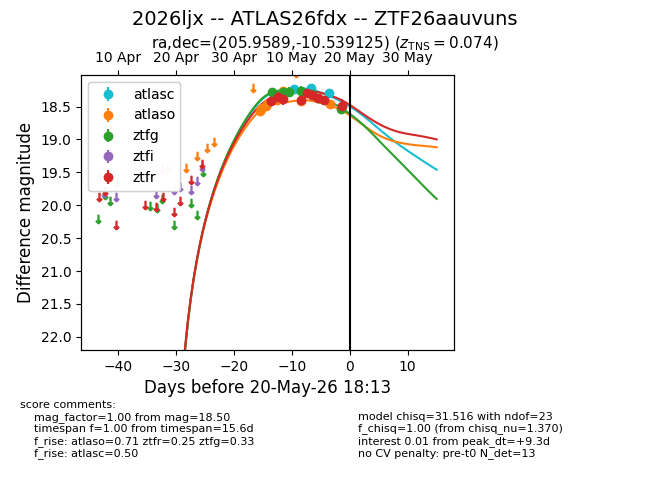
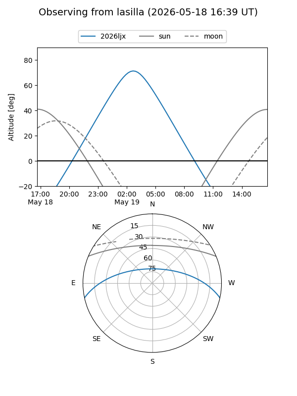
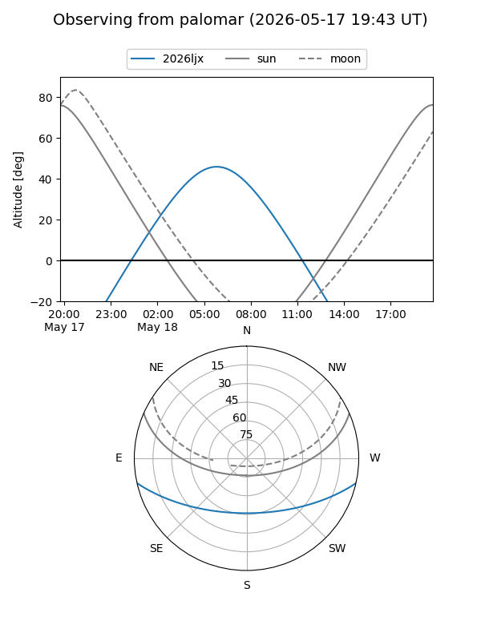
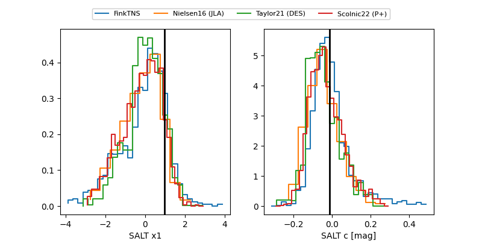

2026ljx
Target 2026ljx at 2026-05-20 18:20
Aliases and brokers:
FINK: link
Lasair: link
ALeRCE: link
TNS: link
YSE: link
alt names
ZTF26aauvuns (ztf,fink_ztf)
2026ljx (tns,yse)
ATLAS26fdx (atlas)
Coordinates:
equatorial (ra, dec) = 205.9589,-10.53912
equatorial (HMS+DMS) = 13:43:50.14,-10:32:20.85
galactic (l, b) = (323.3235,+50.24653)
Flags:
confirmed ia
Photometry:
last atlasc=18.30, atlaso=18.47, ztfg=18.53, ztfr=18.50
3 atlasc, 8 atlaso, 7 ztfg, 9 ztfr detections
Lightcurve

Visibility


Additional plots
